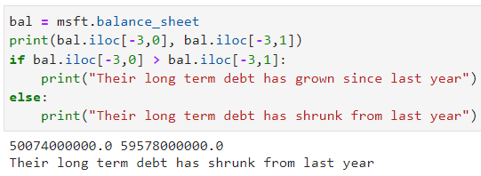
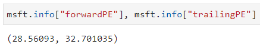
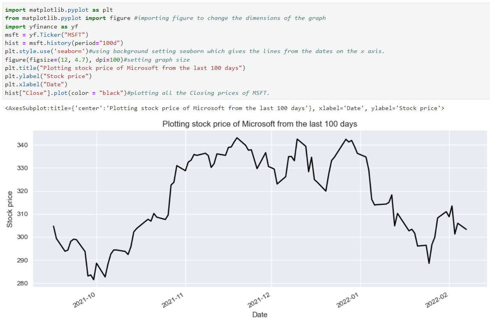
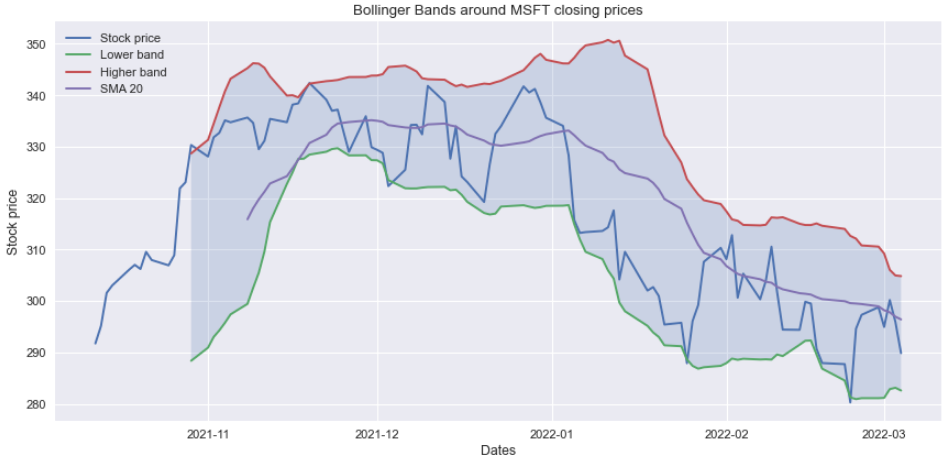

Python for analysis
Here I am going to show you how to use the Python libraries Yahoo! Finance and ta (short for technical analysis)in order to perform fundamental and technical analysis on any stock that the Yahoo Finance API supports. The methods used for plotting graphs can also be used for forex rates and index funds (e.g. ^FTSE, GBP-USD). But, some of the fundamental analysis indicators like measuring earnings and debts cannot be used.
At the start, I am going to show how I programmed each indicator/factor, section by section, and then I am going to group them all up for analysis on Google, which could help make an investment decision.
Firstly, how do we get any market data from Yahoo Finance?
We first need to import the Yahoo Finance library called yfinance and we are going to make a shorter name for it just called yf. Then we can pick a supported stock like Microsoft (Symbol: MSFT) in order to get some information on the company.
Getting market data on MSFT, including Open, High, Low, Close prices and volume traded in a specific time frame e.g. 100 days
.history gathers all the market history data Yahoo has.
Here ^ we had to use the Ticker module in order to access the ticker data from the API.
In order to get some data (from the last 4 years) for fundamental analysis like Revenue, Cash, Long term debt and Total assets/liabilities, use:
You can use this information to do a couple of calculations:
For instance, we can find out if the long term debt of Microsoft is growing by doing msft.balance_sheet and then using .iloc[] to find the location of a specific piece of data. If you look back on the balance sheet, on the third to last row is their long term debt for the last 4 years. We can say this row number is -3 by working from the bottom. Then we look at the data on the first and second columns (or using 0 and 1 for iteration in Python) to see the debt in the last 2 years.
We can then use the code above to compare the two values and calculate if their long term debt has grown in the past year
If you do msft.info you also gets lots of information, so much it doesn't even fit on the page. So you can specify which data you want to pick out, for instance, the trailing PE and forward PE. PE stands for Price to Earnings ratio which some people like to use in order to try to determine if a stock price is overvalued by comparing this value with similar companies. A "forward PE" is the estimated, future PE ratio but the trailing PE value is based on previous and current prices to find what the current PE ratio is.
Let's start plotting:
We can plot the stock price on a graph (comments on the code itself explain most lines)
You can also find out if the company's earnings have increased or not by selecting it from the .earnings dataframe:
Technical analysis indicators:
Here I am going to show you how to implement technical analysis with Python. We are going to be able to use indicators like RSI and Bollinger Bands by using the ta (technical analyis) library.
Let's use Facebook as an example here which will be especially entertaining since the stock price just plummeted a couple of days ago due to a sharp rise in expenses and overall less daily users, which added together makes for low future confidence in the company.
So, what is happening here?
Well on line 5 we use .reset_index()[["Date", Close]] in order to pick out specifically all of the dates and closing prices which is in a form we can easily plot on a graph with plt.plot where the corresponding dates and prices are matched together. Then, ta.momentum.RSIIndicator...).rsi() basically means that from the ta library, go to the module on momentum indicators which is where the RSI indicator is and .rsi() calculates these values for us.
Note, RSI - Relative Strength Index - is used to measure whether a stock is oversold or overbought at a certain price by comparing the magnitudes of recent gains and losses over a certain amount of time. It is on a scale of 0-100 where generally >70 means overbought and the price might drop due to people betting on the reversal and a value of <30 means it is oversold (possibly due to sudden bad press) and the price might increase due to people betting on a reversal since they believe the intrinsic value is above the current one.
Plotting Bollinger Bands on a graph around the stock price:
What are Bollinger Bands? In essence, they use the standard deviation of a set of data from the rolling average to plot an upper band, which if the stock price reaches some traders believe this means the stock is overbought and people may soon bet on the reversal and sell. Or, if the stock price reaches the bottom band, some people believe this means the stock has been oversold and the price might rise. Around 90% of price action happens bwtween the two bands.

The code above starts with the same 2 lines to get market data (specifically Closing prices and their corresponding dates). Then, we use the line bol = ta.volatility.BollingerBands(msft["Close"]) to define the variable bol to the technical analysis library, to the section on volatility where you will find Bollinger Bands where we parse the closing prices to calculate the standard deviation. We then make 2 more variables for each band and then plot the stock price and the lower & higher bands.
I also added titles and labels to each curve and put in a legend in the top left to make it a bit easier to interpret.
Personally, I am a fan of Bollinger Bands. Even though it can do well as an addition to your investment decisions, I wouldn't make any trades solely on BB patterns. I also think this way for RSI, I think it can be useful to help make an investment decision but I think too many people get carried away and use it as their only reason for an investment decision.
For instance, in the graph above, during near the end in January 2022 the price moves very closely to the lower band and continues falling in price like expected. Until, there is a breakout (where the stock price leaves the bounds of the two bands) which means that what happens next cannot be predicted at all - the price could rise or fall a lot but there is no way of telling by just using Bolling Bands).
Plotting trading volume:
Analysing trading volume can also be very important when making an investment decision. If we go back to the market history on MSFT:
We can see that there is trading volume recorded as well.
Let's see the first part of the code which will plot the entire trading volume history for MSFT:
hist.shape[0] tells us the amount of rows on the table msft.history which is important for making the graph later. We can see that there are 9051 days where the trading volumes were recorded which goes back all the way to 1986 which is when Microsoft went public.
The next part of the code, below, shows a for loop running through all of the 9051 rows, then going to the 5th column (starting from zero is 4) and picking out that piece of data which is the volume traded on that day.
The rest of the code and the output is as follows:
temphist is used only to get the exact dates of the volumes traded. Once plotted on the last line, each date is matched up with the correct trading volume.
The last two lines are just to put the y axis numbers in terms of non-standard form, which you have to manually set otherwise it would show in terms of 0.2 x 109 and so on.
Putting it all together
Now let's put it all together in one program which asks you for a stock symbol:
You can find the code from below here: https://github.com/Nicholas-Bakic/Analysis/blob/main/Analysis.py